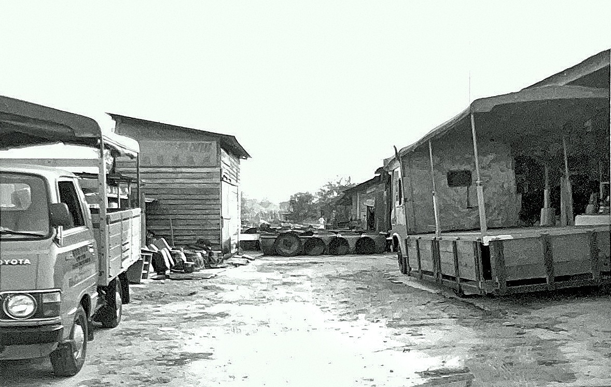

Founded in the 1950s by the Fong family, Kwong Yun Cheong Sauce Factory is a traditional soy sauce manufacturer based in Kepong, Kuala Lumpur. In its early years, the company produced and sold soy sauce from Pasar Kuala Lumpur, supplying customers through traditional retail shops and delivery vans across different parts of Malaysia.
As the business gradually grew, the factory moved to its current manufacturing premises in Kepong during the 1960s. Today, the company is managed by the third generation of the family, continuing the tradition of producing quality condiments with carefully selected ingredients and natural fermentation
Besides light and dark soy sauce, Kwong Yun Cheong also produces taucu (fermented soybean paste), vinegar, sweet sauce and other condiments to serve both home cooks and the food service industry. For more than 70 years, we have remained committed to traditional brewing methods, consistent quality and honest craftsmanship. We believe that good soy sauce takes time, patience and dedication, and we will continue to preserve these values for generations to come.
廣遠祥（Kwong Yun Cheong）创立于1950年代，由冯氏家族创办，是一家位于吉隆坡甲洞的传统酱油厂。 创业初期，公司以吉隆坡巴刹为据点，从事酱油生产与零售，并透过传统店铺及流动货车，将产品销售至马来西亚各地。
随着业务逐步发展，公司于1960年代迁至甲洞设立生产厂房，并一直经营至今 如今，廣遠祥由家族第三代继续管理， 秉承传统酿造精神，坚持采用优质原料和天然发酵工艺，制作品质稳定的调味产品
多年来，我们除了生产酱油及老抽外，也提供豆酱、白醋、甜酱及其他调味产品，服务家庭、餐饮业及食品业客户。 七十多年来，我们始终相信，好的酱油来自耐心、传统工艺，以及对品质的坚持 未来，我们将继续以同样的精神，把值得信赖的产品带给每一位顾客
Kwong Yun Cheong was founded by the Fong family and began its journey in Kuala Lumpur.
The factory moved to Kepong in the 1960s, continuing its traditional soy sauce production.
Today, the third generation of the family continues to preserve the traditional brewing methods and values passed down through generations.
精選優質原料
天然發酵工藝
家族三代傳承
七十多年品質堅持